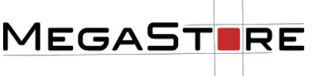
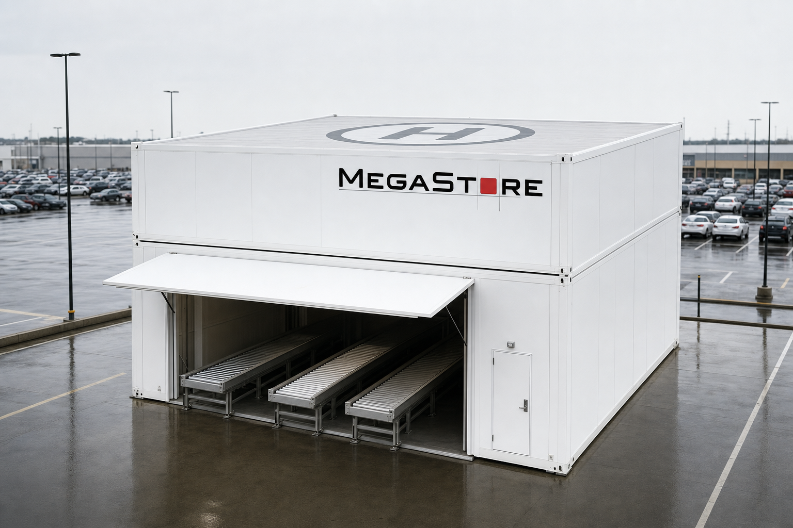
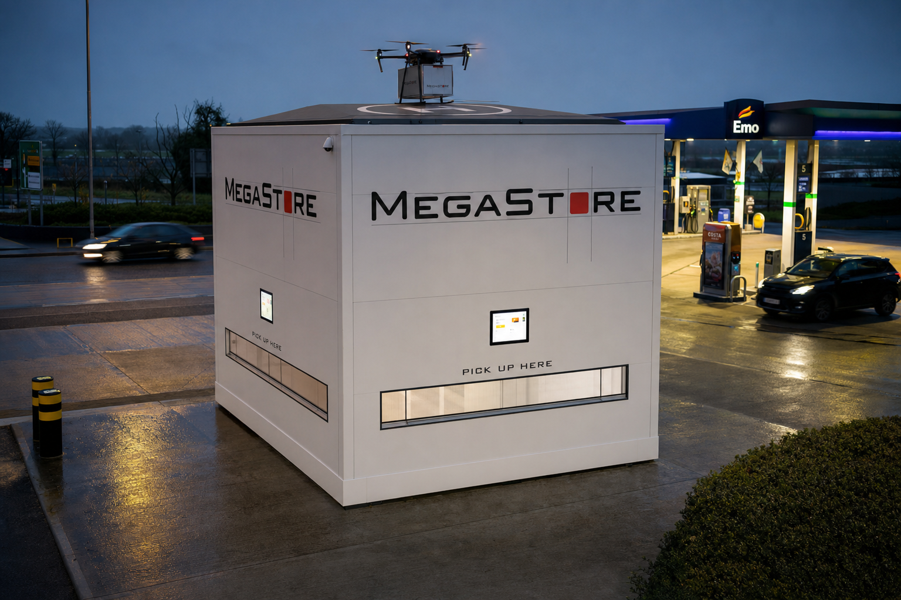
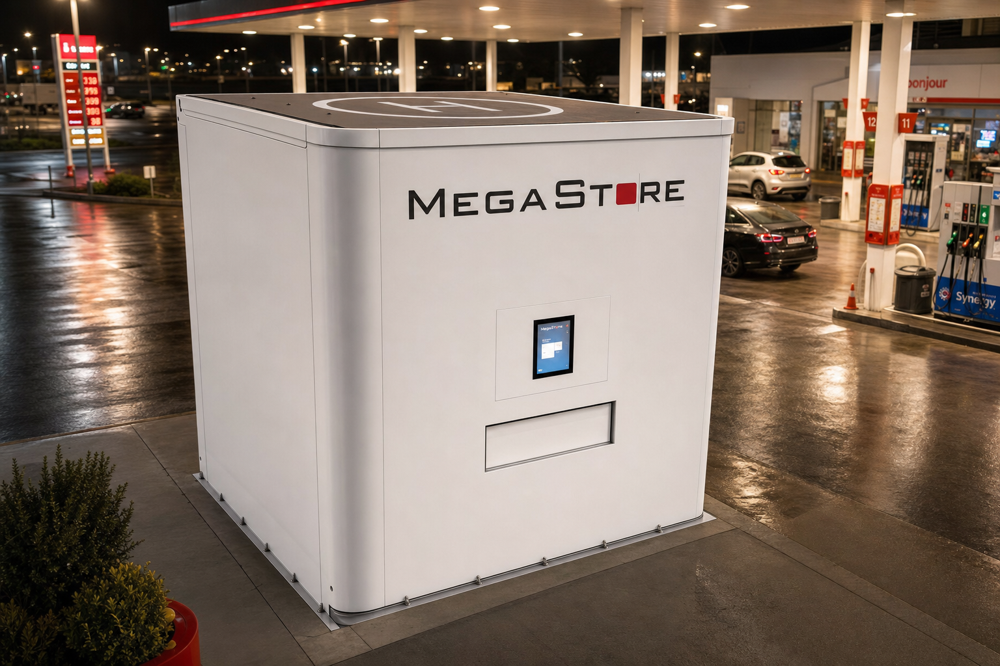

Megastore-branded logistics platform: automated warehouses, autonomous dark stores, and a hosted pickup network to power Yango Deli and B2B clients.
Edge modules sit inside partner or low‑cost locations – gas stations, industrial zones, retail/business parks, and selected rooftops.

Think of this as a micro‑warehouse in a box that we drop wherever cost and access are optimal.

Use pack&pickup to test new areas and create premium nodes inside partner sites.

This is our coverage workhorse – cheap, repeatable and easy to host.
Key planning question: how many nodes per corridor (center, north, south) to hit volume and SLA targets.
Automate Caesarea and Afek; evaluate southern hub site; design module standards; pilot 1–2 autonomous dark stores and 3–5 micro pickup stations in Gush Dan.
Potentially open southern hub; sign first gas‑station and business‑park partners; deploy first wave of storage units in industrial sites; roll out 20–40 pickup/pack&pickup nodes.
Ramp domestic B2B distribution; onboard Cainiao/AliExpress flows to pickup network; densify nodes in center/north/south; move towards 90% automation in core nodes.
2030 base‑case: last‑mile/domestic unit becomes Megastore's largest revenue contributor; 2029 is upside if execution is ahead of plan.
This slide is for honest internal discussion – what could break the plan and where we must be disciplined.